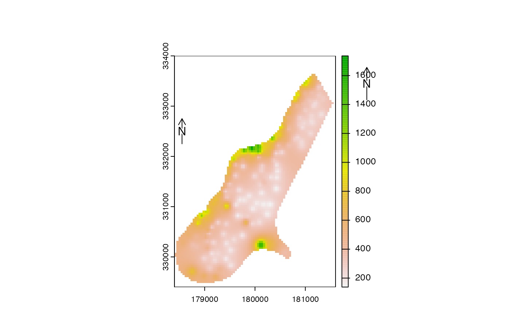

North arrow
north.RdAdd a (North) arrow to a map
Arguments
- xy
numeric. x and y coordinate to place the arrow. It can also be one of following character values: "bottomleft", "bottom", "bottomright", topleft", "top", "topright", "left", "right", or NULL
- type
integer between 1 and 12, or a character (unicode) representation of a right pointing arrow such as
"\u27A9"- label
character, to be printed near the arrow
- angle
numeric. The angle of the arrow in degrees
- d
numeric. Distance covered by the arrow in plot coordinates. Only applies to
type=1- head
numeric. The size of the arrow "head", for
type=1- xpd
logical. If
TRUE, the scale bar or arrow can be outside the plot area- ...
graphical arguments to be passed to other methods
Examples
f <- system.file("ex/meuse.tif", package="terra")
r <- rast(f)
plot(r)
north()
north(c(178550, 332500), d=250)

if (FALSE) { # \dontrun{
f <- system.file("ex/elev.tif", package="terra")
r <- rast(f)
plot(r, type="interval")
sbar(15, c(6.3, 50), type="bar", below="km", label=c(0,7.5,15), cex=.8)
north(type=3, cex=.8)
north(xy=c(6.7, 49.9), type=2, angle=45, label="NE")
north(xy=c(6.6, 49.7), type=5, cex=1.25)
north(xy=c(5.5, 49.6), type=9)
north(d=.05, xy=c(5.5, 50), angle=180, label="S", lwd=2, col="blue")
## all arrows
r <- rast(res=10)
values(r) <- 1
plot(r, col="white", axes=FALSE, legend=FALSE, mar=c(0,0,0,0), reset=TRUE)
for (i in 1:12) {
x = -200+i*30
north(xy=cbind(x,30), type=i)
text(x, -20, i, xpd=TRUE)
}
} # }